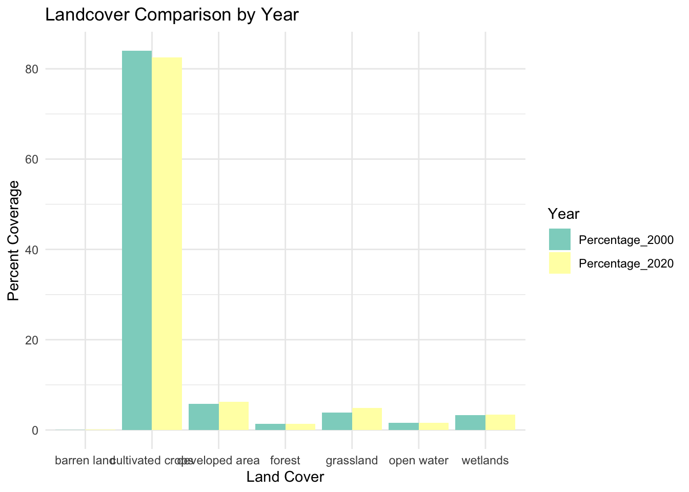
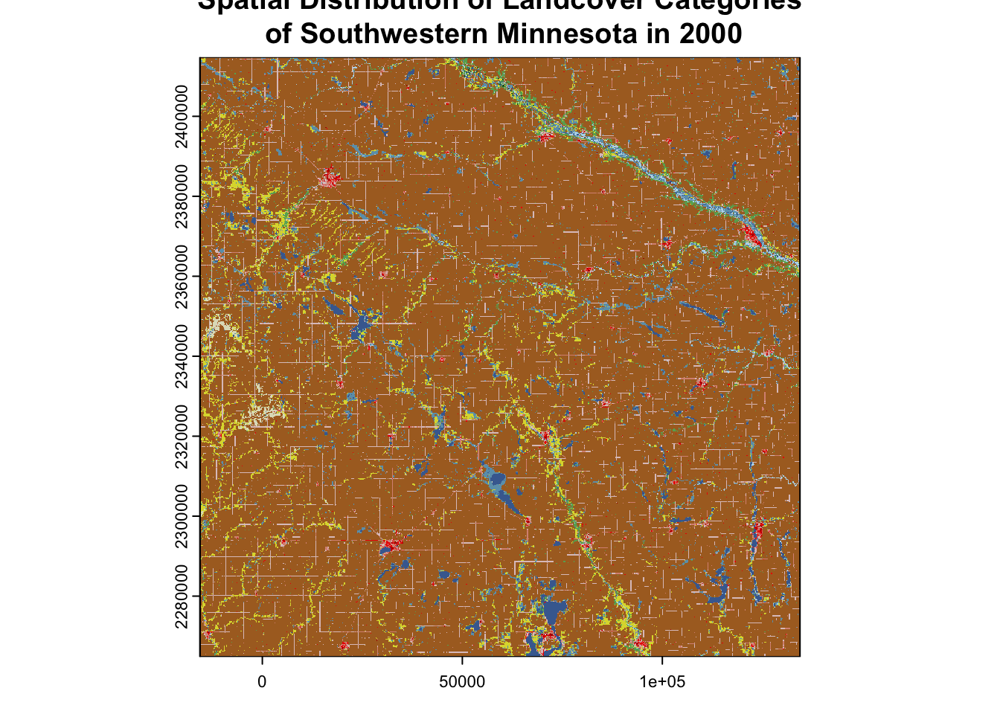
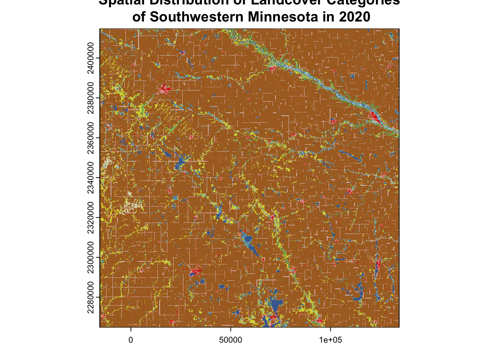

── Conflicts ────────────────────────────────────────── tidyverse_conflicts() ──
✖ tidyr::extract() masks terra::extract()
✖ dplyr::filter() masks stats::filter()
✖ dplyr::lag() masks stats::lag()
ℹ Use the conflicted package (<http://conflicted.r-lib.org/>) to force all conflicts to become errors
# for 2000# convert pixel counts to a dflandcover_2000_pc <-as.data.frame(landcover_2000_pc[, c(2,3)])colnames(landcover_2000_pc) <-c("Landcover_Class", "Pixel_Count_2000")print(landcover_2000_pc)
# adding proportion to the dftotal_pixels <-sum(landcover_2000_pc$Pixel_Count_2000)landcover_2000_pc$Percentage_2000 <- (landcover_2000_pc$Pixel_Count_2000 / total_pixels) *100
# for 2020# convert pixel counts to a dflandcover_2020_pc <-as.data.frame(landcover_2020_pc[, c(2,3)])colnames(landcover_2020_pc) <-c("Landcover_Class", "Pixel_Count_2020")print(landcover_2020_pc)
Warning: There was 1 warning in `summarise()`.
ℹ In argument: `across(everything(), sum, na.rm = TRUE)`.
ℹ In group 1: `land_cover_class = "barren land"`.
Caused by warning:
! The `...` argument of `across()` is deprecated as of dplyr 1.1.0.
Supply arguments directly to `.fns` through an anonymous function instead.
# Previously
across(a:b, mean, na.rm = TRUE)
# Now
across(a:b, \(x) mean(x, na.rm = TRUE))
# some exploratory data analysis# 1. group bar plotdata <- lc_2000_2020 %>%pivot_longer(cols =c(Percentage_2000, Percentage_2020), names_to ="Year", values_to ="Value")ggplot(data, aes(x = land_cover_class, y = Value, fill = Year)) +geom_bar(stat ="identity", position =position_dodge()) +labs(title ="Landcover Comparison by Year",x ="Land Cover",y ="Percent Coverage") +theme_minimal() +scale_fill_brewer(palette ="Set3")

# 2. visualizing the raster file spatiallyn_classes <-length(landcover_2000_pc$Landcover_Class)palette <-brewer.pal(n = n_classes, name ="Set3")
Warning in brewer.pal(n = n_classes, name = "Set3"): n too large, allowed maximum for palette Set3 is 12
Returning the palette you asked for with that many colors
plot(landcover_2000, col = palette, legend =TRUE,main ="Spatial Distribution of Landcover Categories\n of Southwestern Minnesota in 2000")

plot(landcover_2020, col = palette, legend =TRUE,main ="Spatial Distribution of Landcover Categories\n of Southwestern Minnesota in 2020")

# preprocessing for change detectionlandcover_2020 <-resample(landcover_2020, landcover_2000, method ="near")